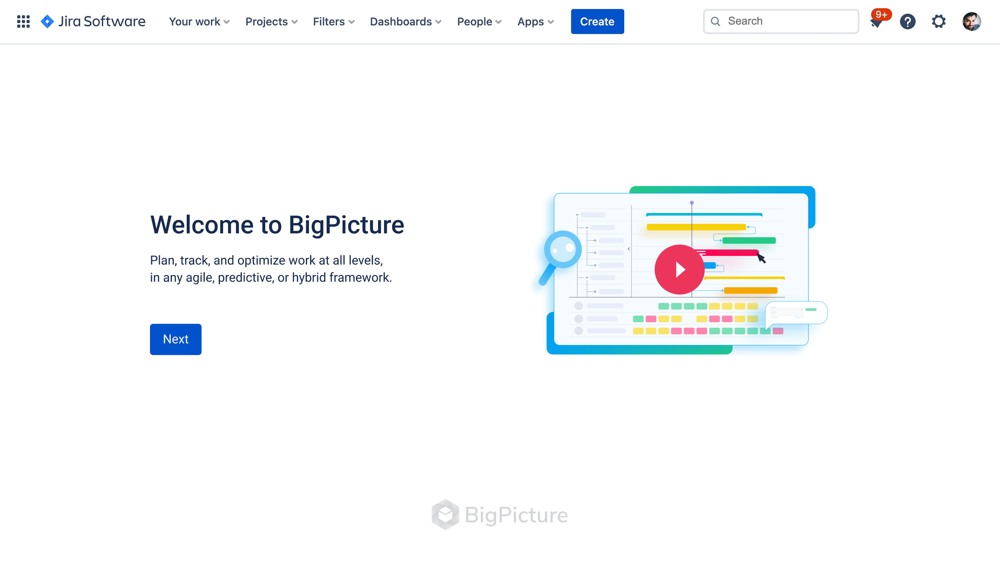
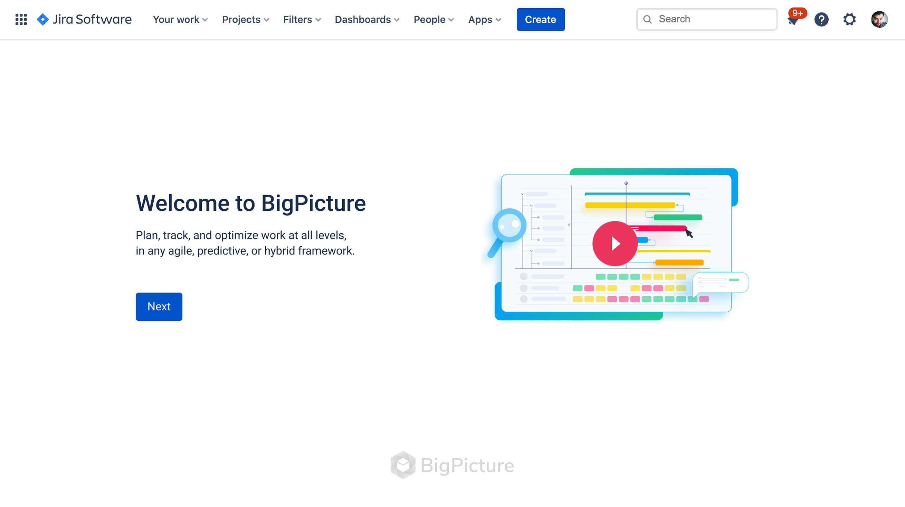
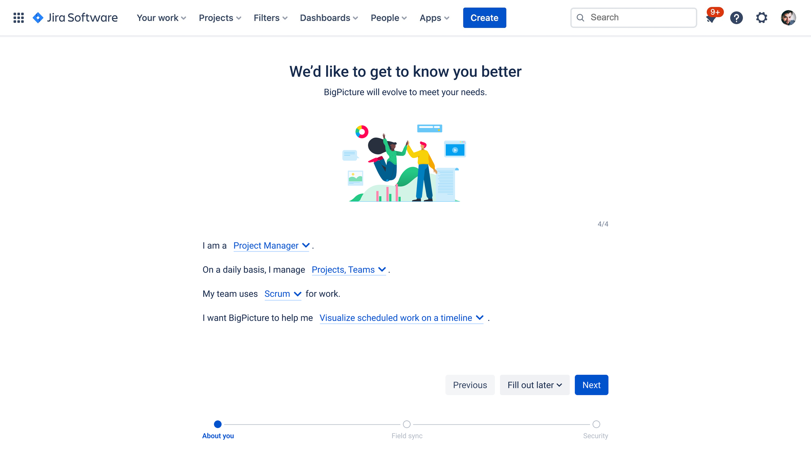
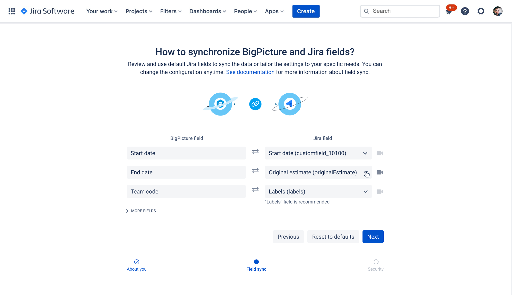
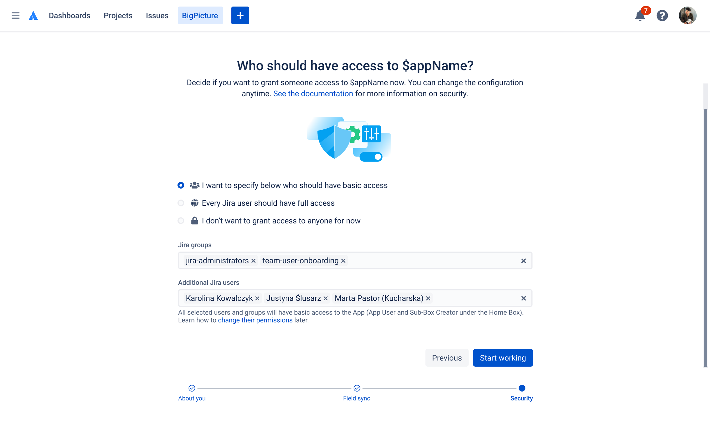

A structured onboarding flow designed to guide new BigPicture users through their first essential configuration steps - reducing drop-off and time to value for one of the most powerful portfolio management tools in the Atlassian ecosystem.

BigPicture is one of the most feature-rich project portfolio management tools available for Jira - but that power comes at a cost. New users landing in the app for the first time faced a blank canvas with no clear starting point. Without guidance, most of them either abandoned setup mid-way or required heavy support from their IT team to get started.
There was no onboarding flow at all. Users were expected to figure out the configuration on their own - including Jira sync settings, team access, and program structure - before they could experience any real value from the product. The gap between sign-up and first meaningful use was too wide.
I started by reviewing support tickets and customer success logs to understand where users were getting stuck most often. I then conducted in-depth interviews with first-time users across different company sizes and roles - from project managers to IT admins - to map the mental models they brought into the product.
Session recordings showed that the majority of new users spent their first minutes clicking around without a clear goal, often ending up in advanced configuration screens they weren't ready for. The research also revealed that users came from very different backgrounds - some were migrating from other tools, some were Jira power-users, and some were setting up portfolio management for the very first time.
The research pointed to a consistent pattern: the problem wasn't the product's functionality - it was the absence of any structured path into it.
Users didn't know what to do first. The product opened into a full interface with no indication of recommended first steps or what a complete setup looked like.
Different user types needed different starting configurations. A solo project manager and an enterprise admin had almost no overlap in their initial setup needs.
The connection between BigPicture and Jira projects was the most critical - and most confusing - step. Users who got it wrong early had to restart their entire setup.
Users who reached a working program view within their first session were significantly more likely to continue using the product. The goal was to get them there faster.
Three distinct user types entered BigPicture with very different expectations and technical backgrounds. The onboarding had to adapt to all of them without becoming a one-size-fits-all compromise.
Rather than overwhelming users with a comprehensive setup wizard, I designed a lightweight, role-aware onboarding flow that asked users just enough to personalise their experience - then guided them through only the steps that mattered for their role.
The flow consisted of four steps: a warm welcome screen, a short profiling survey to understand the user's context, a focused configuration step for the most critical settings, and a clear path to their first working view in BigPicture. Each step was designed to feel like progress - not a form.
The final design used a step-by-step modal flow that launched automatically on first login. Each screen had a single focus - one question, one action, one decision. Progress was visible throughout, and users could always skip ahead if they preferred to explore on their own.
The profiling step used a short survey to segment users by role and use case. Based on their answers, the configuration step surfaced only the most relevant settings - for most users, that meant connecting their Jira projects and setting up basic access. The final screen confirmed their setup was complete and opened their first program view.




The structured onboarding flow significantly reduced the time users needed to reach their first working program view. Support tickets related to initial setup dropped noticeably after the release, and session data showed that users who completed the onboarding were more likely to return and engage with advanced features within the first week.
The role-based profiling step proved especially effective - by tailoring the configuration experience to the user's context, we eliminated most of the irrelevant setup steps that previously caused confusion and drop-off. The onboarding became the fastest path from sign-up to real value the product had ever offered.